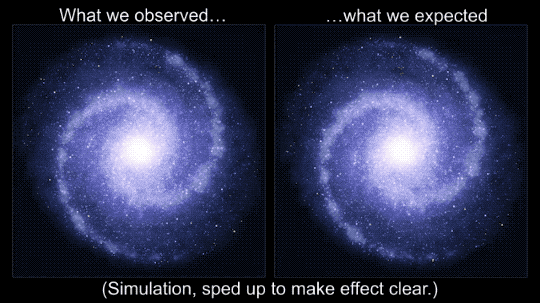
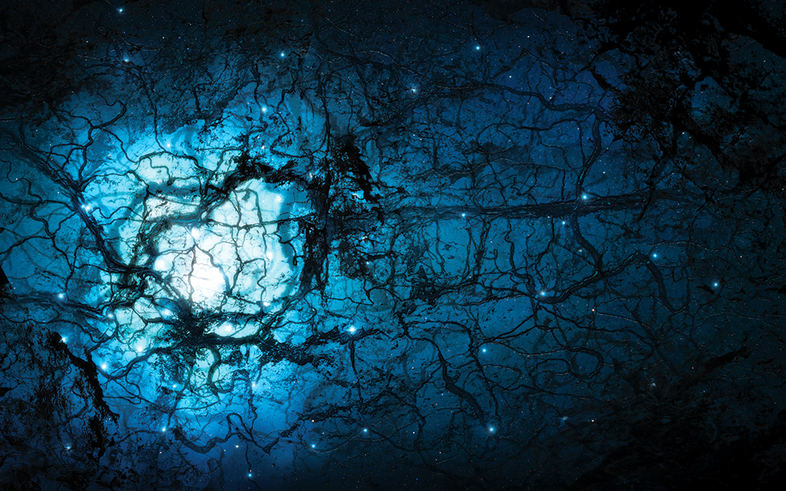

DARK MATTER & DARK ENERGY

A surprising fact about the universe: most of it doesn’t shine. When astronomers add up the matter we can see (stars, gas, dust) and compare it with what gravity says must be there, the numbers don’t match. Two names cover this mystery: dark matter (extra gravity that clumps) and dark energy (a smooth component that makes cosmic expansion speed up).
Dark matter vs. dark energy (quick difference)
Dark matter is the “missing mass” that behaves like matter: it clumps, forms halos around galaxies, and pulls things together through gravity. It doesn’t need to glow to be real—astronomers infer it from motion and from how it bends light.
Dark energy is almost the opposite: it appears to be smoothly distributed and becomes important only on very large scales. Its main signature is that the universe’s expansion is not just continuing—it’s accelerating.
In the standard picture of cosmology, ordinary atoms are only a small slice of the cosmic “budget”, while dark matter and dark energy dominate. (The exact percentages depend on the dataset, but the rough story is stable: a few percent normal matter, about a quarter dark matter, and the rest dark energy.)

What is dark matter?
Dark matter is matter we don’t see directly because it doesn’t emit, absorb, or reflect light the way ordinary matter does. What we do see is its gravity—it acts like extra mass in and around galaxies and galaxy clusters. The simplest idea is that it’s made of new particles we haven’t detected in the lab yet.
What does “missing mass” actually mean?
Scientists can estimate how much mass is present in two independent ways: (1) by counting light (stars) and measuring gas (for example with radio and X‑ray telescopes), and (2) by measuring gravity (how fast objects orbit, or how strongly spacetime bends light). When method (2) says “there should be much more mass here” than method (1) can account for, that gap is the dark matter problem.
How do we know it exists?
- Galaxy rotation curves (Vera Rubin & others): stars far from the galactic center orbit faster than the visible matter distribution predicts. The simplest fix is a massive, extended halo.
- Galaxy clusters (Fritz Zwicky’s “missing mass”): galaxies in clusters move so fast that, using the virial theorem, the cluster should fly apart unless there is far more mass than we see in stars.
- Gravitational lensing: clusters and galaxies bend the light of background objects. The measured bending often requires more mass than the luminous matter provides.
- The Bullet Cluster and similar collisions: hot gas (seen in X‑rays) gets slowed by pressure, while most of the lensing mass is offset—suggesting most mass behaves like a collisionless component (dark matter).
- Cosmic microwave background & large‑scale structure: the pattern of early-universe fluctuations and today’s galaxy distribution fit best when most matter is dark and “cold” (moves slowly, so it can clump early).
What is gravitational lensing (and how do we “do” it)?
In general relativity, mass curves spacetime, and light follows the curved paths. A massive object between us and a distant galaxy therefore works like a lens. Astronomers use images of many background galaxies and look for tiny, coherent distortions in their shapes.
- Strong lensing: obvious arcs, multiple images, or even Einstein rings. The geometry lets us reconstruct a detailed mass model of the lens.
- Weak lensing: each background galaxy is only slightly stretched (“shear”), so scientists average over thousands/millions of galaxies to build a statistical mass map.
- Microlensing: temporary brightening when a compact object passes in front of a star. This method tested (and strongly limited) many “dark” ordinary-matter candidates in the Milky Way halo.

What could dark matter be made of?
We don’t know yet—and the constraints are part of the story. Dark matter must be abundant, long‑lived, and (mostly) collisionless so it can pass through itself and ordinary matter without much drag. It also has to clump in the right way to match galaxy and cluster observations.
- WIMPs (hypothetical): a classic idea—new particles with weak-scale interactions. Searches look for rare scatters in underground detectors, signals from annihilation, or production at colliders.
- Axions (hypothetical): ultra-light particles originally proposed to solve a problem in particle physics; in the right range they behave like cold dark matter. Experiments try to convert axions into photons in strong magnetic fields.
- Sterile neutrinos / dark-sector particles: models where dark matter has its own interactions, but remains hard to see directly.
- Not (mostly) ordinary “dark” objects: things like faint stars or planets (“MACHOs”) were tested via microlensing and can’t make up most of the halo, though small fractions are still possible.
There are also alternative ideas (for example modifying gravity), but they have to match all the evidence at once: rotation curves, lensing, cluster collisions, and the early-universe fingerprints in the cosmic microwave background.

What is dark energy?
Dark energy is the name for whatever causes the universe’s expansion to accelerate at late times. The simplest explanation is a cosmological constant (often written as $\Lambda$): a constant energy density associated with empty space. Another possibility is that it’s dynamical (sometimes called quintessence), meaning it could change slowly over cosmic time.
How do we know the expansion accelerates?
- Type Ia supernovae (late 1990s): used as “standard candles”. By comparing their intrinsic brightness to their observed dimness, astronomers build a distance–redshift (Hubble) diagram that points to acceleration.
- CMB + baryon acoustic oscillations: the early-universe sound-wave scale acts like a ruler. Measuring it at different epochs reveals the expansion history and supports dark-energy–dominated late times.
- Growth of structure: acceleration changes how quickly galaxies and clusters form. Surveys compare the predicted growth to observed clustering and lensing.
How dark matter and dark energy connect to everything
Cosmology is partly a timeline. Early on, matter (mostly dark matter) dominated: gravity amplified tiny fluctuations into the cosmic web. Much later, dark energy began to dominate the large-scale dynamics and the expansion started to accelerate.
- Galaxies: halos of dark matter set the gravitational potential; gas falls in, cools, and forms stars inside that scaffold.
- Clusters: they are the biggest bound objects, so they’re great laboratories—lensing, X‑ray gas, and galaxy motions all cross-check the mass.
- Cosmic maps: weak-lensing surveys literally draw the large-scale distribution of mass, letting us compare “where the mass is” to “where the light is”.
- Fate of the universe: the properties of dark energy determine whether acceleration stays constant, increases, or possibly changes in the far future.
On everyday scales, dark energy is far too diffuse to notice. Dark matter, meanwhile, is already “here” in the sense that the Milky Way sits inside a dark halo—yet it passes through us without obvious interaction. Together, these two components shape both the structure of the universe and its expansion history.
Dark matter is the invisible mass behind galaxies, clusters, and the cosmic web. Dark energy is the component behind the universe’s late-time accelerated expansion. We measure them not by seeing them directly, but by carefully comparing light, motion, and spacetime bending—turning the whole universe into a physics experiment.